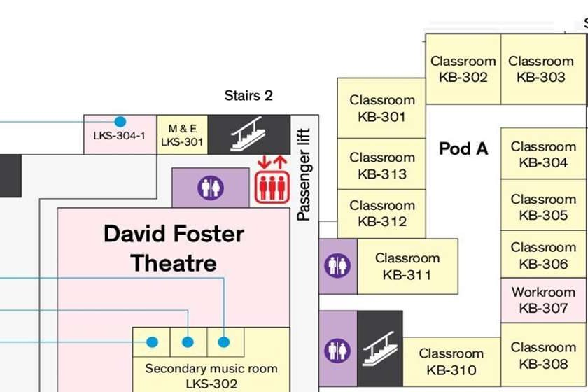
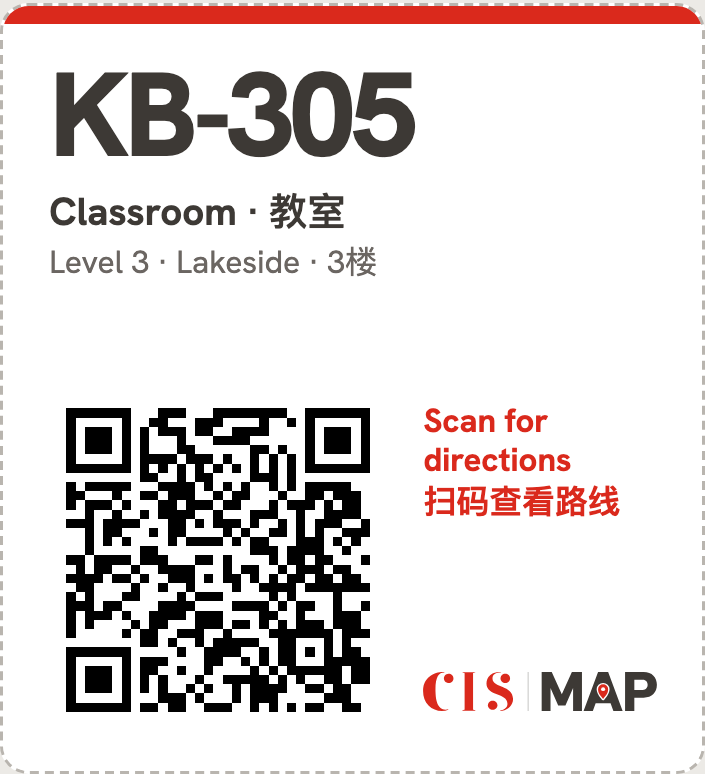
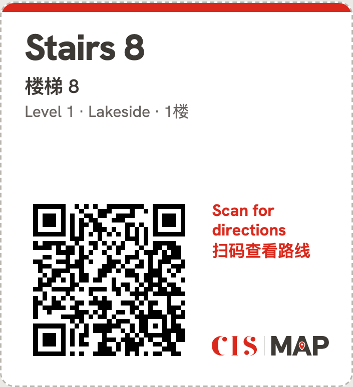
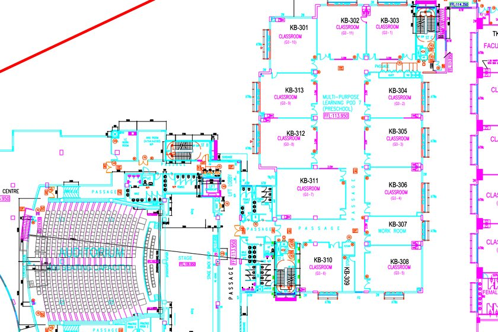
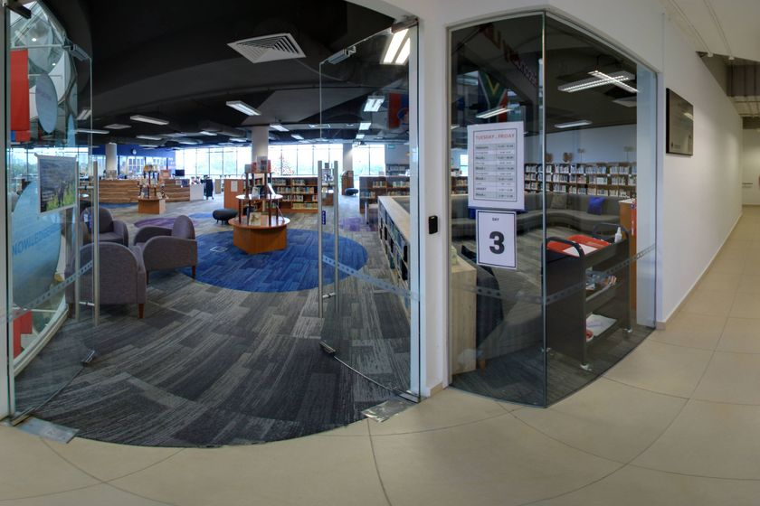
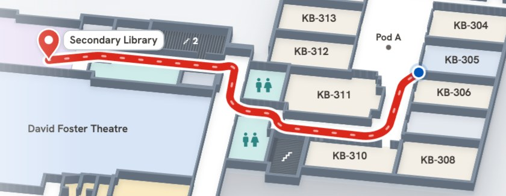

Find any room at Lakeside, starting from wherever you're standing
Radek Green
12 November 2026
It has six levels and five wings, with 606 rooms and places between them and hallways that are easy to get lost in. If you're new, all you have to go by is an evacuation plan, if there's one nearby, and those were drawn to get people out in a fire.

In April I showed the school one floor of it, 53 places traced from a photo of the evacuation plan, and promised the rest. It took a while, but it now covers all six levels and 606 places, and I'd like to walk you through it.
The April version, running on a photo of the Level 4 plan.
Codes work with or without the dash, and so do names. Type "girls toilet" and you get the nearest one. It forgives typos, so "libary" still finds the library.
The real app, running inside the slide.
This is what the app says for the walk on the title slide, from KB-305 to the Secondary Library. Every step names something you'll see on the way:
A family who doesn't read English gets the room names, the search and the directions in their own language. The 文A button changes it at any time.
Scan the label beside a door, or the one on a stair landing, and the app already knows where you are, so the only question left is where you're going. The sheets come out of the app ready to print, in English and Chinese, for every room, stair and lift.


Switch it on and the route sticks to lifts and ramps. If a room can only be reached by stairs, the app says so.
Female or male, students or adults, or accessible: ask and you get the nearest one, as the signs say.
The libraries and the gym have more than one door, so a trip from one starts by asking which side you're at.
When a route goes round a staff-only area or the other school section, a line under it says so.
Send a trip as a link, or show it as a QR code for a parent or a visitor to scan.
Tap where you are instead of searching for it.
Every route gives its distance and walking time, stairs included.
After the first visit it keeps working with no signal, and follows the phone's dark mode and contrast settings.
10 sheets (PNG), one per floor and wing: rooms, codes and corridors

6 sheets of vector drawings: where walls, doors and stairs really are

605 panoramas at 8192 × 4096, and the signs in them
Each sheet's coloured areas traced into room and corridor polygons, then about 2,400 corrections by hand.
Each sheet fitted to the CAD by its stairs and room codes (a Theil–Sen fit), so every floor is in real metres.
503 doors measured and moved to the CAD's, and the theatre block, bridges, car park and pool taken from it.
7,970 lines of text read off the photos, which name 44 of the 47 toilets by whom they're for.

606 places with their walls, doors and stairs, in campus metres
3,633 points, 12,886 corridor links, 103 stairs, lifts and bridges, 10 gates
494 automatic checks after every change, and 10,000 test trips with no route through a wall
Static files: the map data, the app and its 16 languages. The phone keeps a copy (a service worker), so after the first visit it works offline. No server, no accounts, no tracking.
Dijkstra's shortest path: a corridor costs its length, up to four times as much against a wall; stairs cost their time and a little more; a closed gate is never used.
The line is straightened and its corners rounded, then written as steps by the landmarks you pass, in any of 16 languages.
3,633 points where corridors meet, doors open and stairs land, joined by 12,886 links, and 103 stairs, lifts and bridges between floors. routing/build.mjs
A link costs its walking distance, up to four times as much against a wall and back to normal 1.2 m out, so routes keep to the middle of a corridor. Floor a trip should avoid costs more, and a closed gate can't be used. Stairs cost their climb, 5 s a metre up and 3 down, and 10 s more a flight, so a trip on one floor never goes down and back up to save a few seconds. A lift costs 60 s of waiting.
From KB-305 outwards, the cheapest point not yet settled comes off a binary heap and its neighbours' prices drop where it offers a cheaper way. When the library comes off the heap, the route is found: here after 365 points. routing/engine.mjs
The chain of links zig-zags through the graph (grey). The app straightens it where the floor allows and rounds its corners, so the line drawn (red) keeps to the corridor. app/map.js smoothLine
Since 2 November, secondary students' phones stay off unless a teacher asks for them, which takes away the most obvious users. These are the ways I can see it still earning its place, and I'd like to hear which you'd back:
Try it now